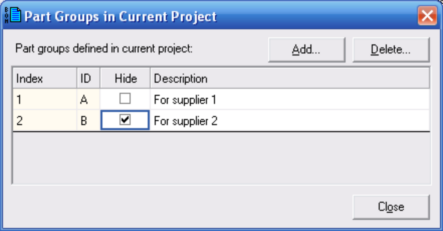
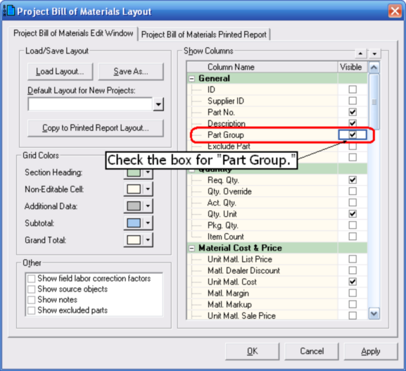
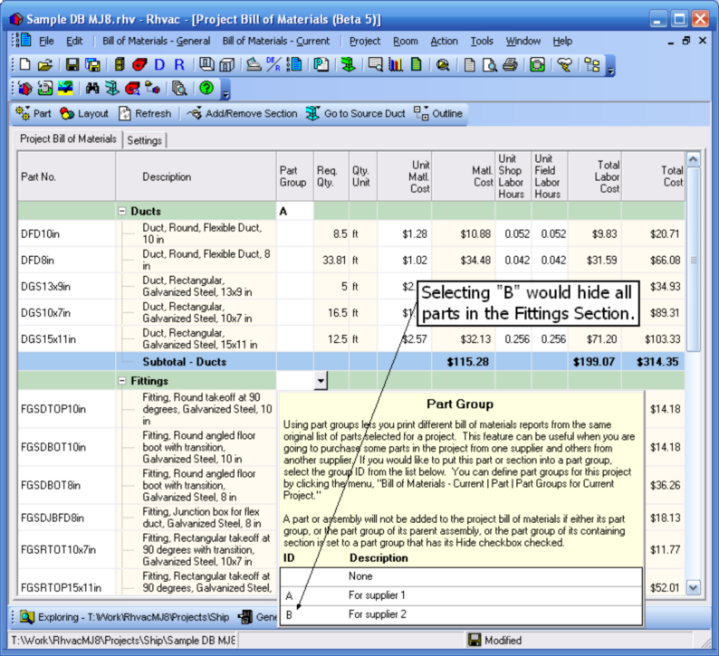

Part Groups (Project Bill of Materials Window) |
  
|
Part Groups (Project Bill of Materials Window) |
|
You can use part groups to let you generate different lists from the same project bill of materials. For example, you may need to give one list of parts to one supplier, and another list of parts to another supplier. To set up part groups, in the Bill of Materials toolbar click "Part | Part Groups for Current Project." That will open the Part Groups in Current Project dialog, shown below.

First, click the Add button and then enter a short ID for the new part's name. Then type in a description for the group. Then check the Hide box if you want to hide that part group's parts. In the above picture, part group B will be hidden, so any parts assigned to that part group will not show up in the project bill of materials. Once you have all of your part groups defined click Close.
Next, you will need to assign parts in your project bill of materials to your various groups. Click the Layout button in the Project Bill of Materials window's toolbar to open the Project Bill of Materials Layout dialog, shown below. Then check the Part Group checkbox and click OK.

Next, assign parts to part groups. Note that you can assign all the parts in a section to a part group by selecting a part group for the section header. In the example picture below, all of the parts in the Duct section have been assigned to part group A. And if you were to click B (in the dropdown help window) for the part group for the Fittings section, all of those parts would be hidden, since we checked the Hide checkbox for that part group in a previous step.
